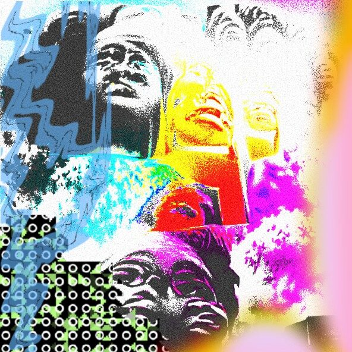
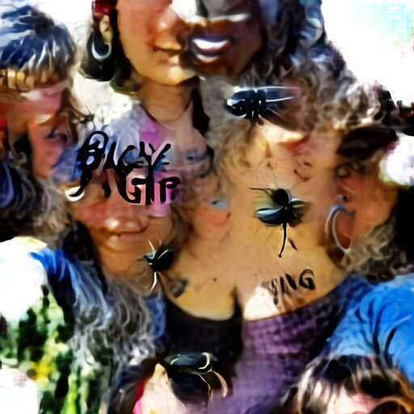
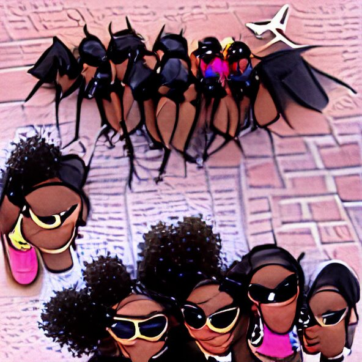
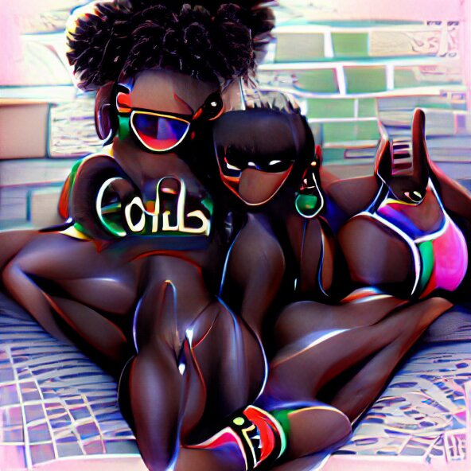
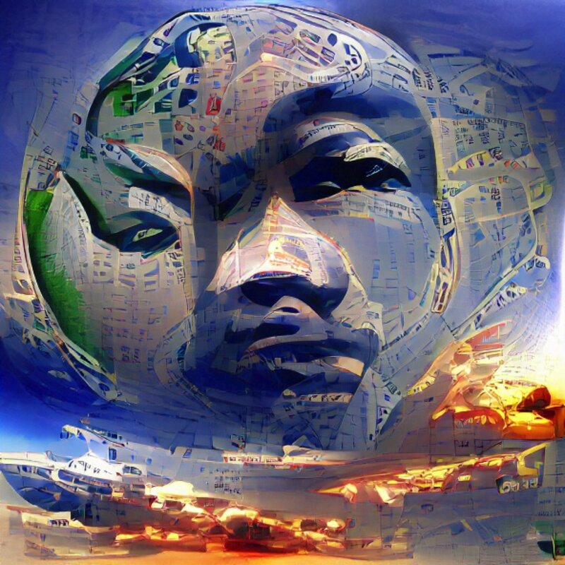
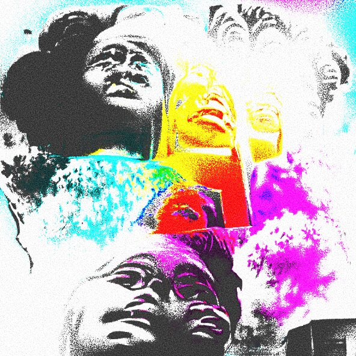
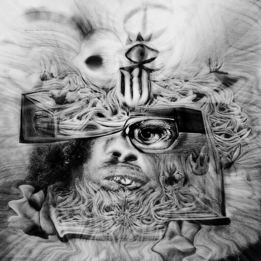

Generative Art

Overview
Experiments with VQGAN+CLIP, an early GAN-based AI model that builds images from a text prompt (and sometimes a starting image). I used it in a community Colab notebook, then finished each piece by layering my own graphics on top.
Process
- Write a prompt, sometimes with a source image.
- Generate and pick the outputs worth keeping.
- Layer graphics on top to finish the piece.
What I was exploring
This was the height of Web3 and early AI image tools, and I wanted to get my hands on every tool I could. Most of these pieces started from song lyrics: lines anyone could interpret in their own way. I wanted to see how a computer would interpret them as images. Small changes in wording, like “a black fly girl gang” versus “a group of black girls that are fly,” produced completely different worlds.
I'd always been interested in graphic design but didn't know where to start. Generative art gave me a way in, and a starting point for figuring out what graphic design could be for me.





